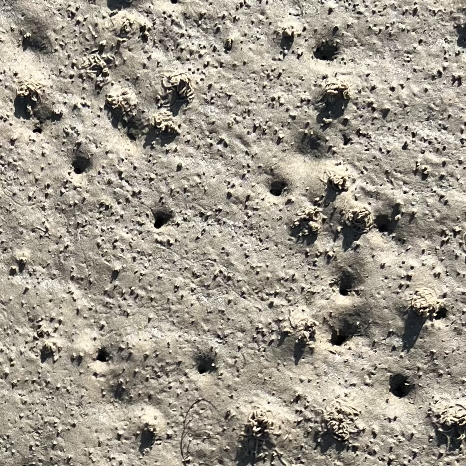
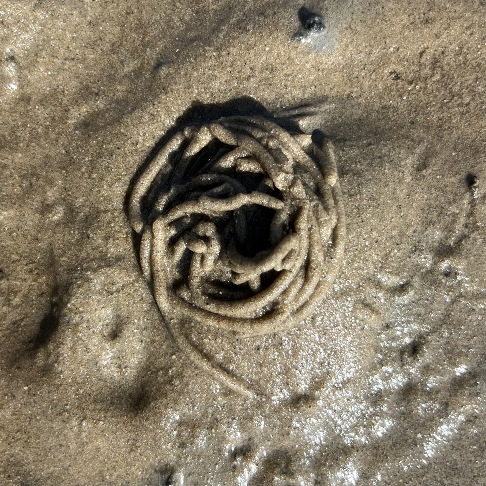
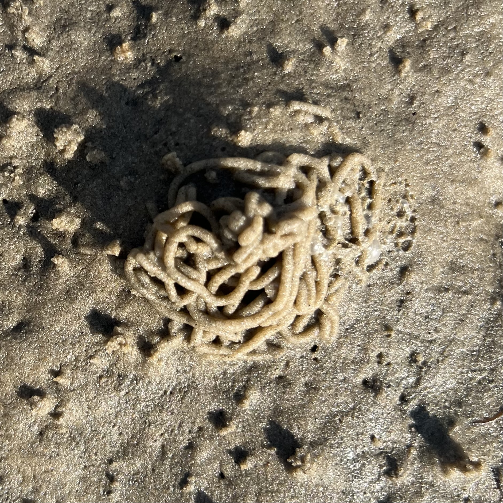
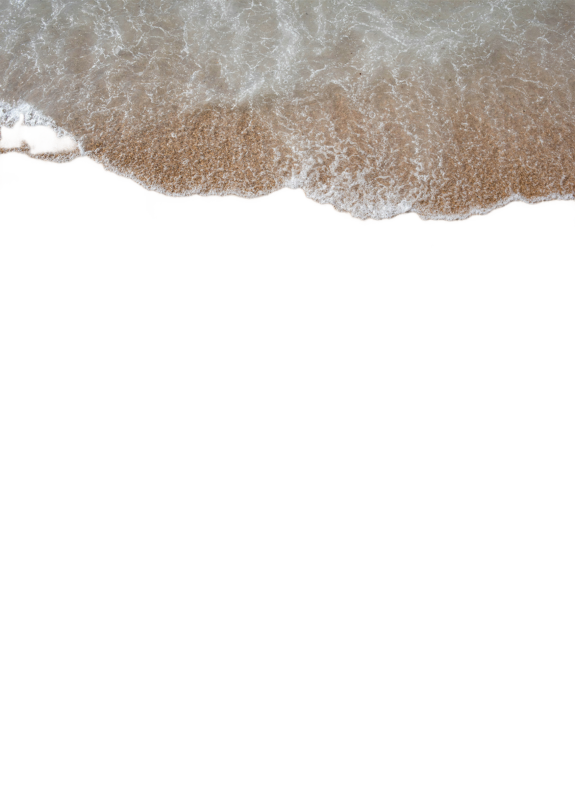

Wattwurmhaufen – wie funktioniert das eigentlich? Und woher kommen die Löcher neben den Häufchen?
Auf der Exkursion nach Amrum haben wir mehr über die im Boden lebenden Tierchen gelernt.
Wattwurmhaufen entstehen, wenn der Wattwurm Sand frisst, Nährstoffe herausfiltert und den Rest als
spiralförmige Häufchen ausscheidet. Das Loch daneben ist der Eingang zu seiner U-förmigen Wohnröhre. Durch das
Loch zieht er Wasser und Nahrung ein, der Haufen ist der Ausgang.
Ich entschied mich dafür, die Häufchen der Wattwürmer, im Rahmen der Aufgabe zu natürlichen Mustern und
Vorgängen in der Natur, umzusetzen.
In einem ersten Versuch habe ich versucht, einen Haufen möglichst realistisch und mit einer entsprechenden
Animation darzustellen. Das fiel mir jedoch schwer, und die Umsetzung im Code erwies sich als komplizierter als
gedacht.
Außerdem rückten dabei die natürlichen Muster in den Hintergrund.
In der endgültigen Umsetzung geht es stärker um das Verhältnis und die Anordnung mehrerer Haufen zueinander – und
nicht um die exakte Darstellung eines einzelnen. Wichtige Merkmale waren, dass sie sich in Größe und Form
unterscheiden. Der Anfang bzw. das Ende der Spirale liegt außerdem nicht immer an der gleichen Stelle, sodass
sich die Spiralen in unterschiedliche Richtungen winden. Zu jedem Häufchen sollte zudem ein Loch generiert
werden. Aus stilistischen Gründen habe ich mich zusätzlich dafür entschieden, einen gewissen Spielraum in der
Farbgebung zuzulassen – zwischen Orange- und Brauntönen.
Insgesamt fand ich es spannend, mehr über den Wattwurm zu erfahren und die Entstehung der Häufchen genauer zu
beobachten. Die Häufchen könnten zum Teil noch interessantere und verschlungenere Spiralen bilden, um die
Vielfalt der Realität noch besser wiederzugeben.